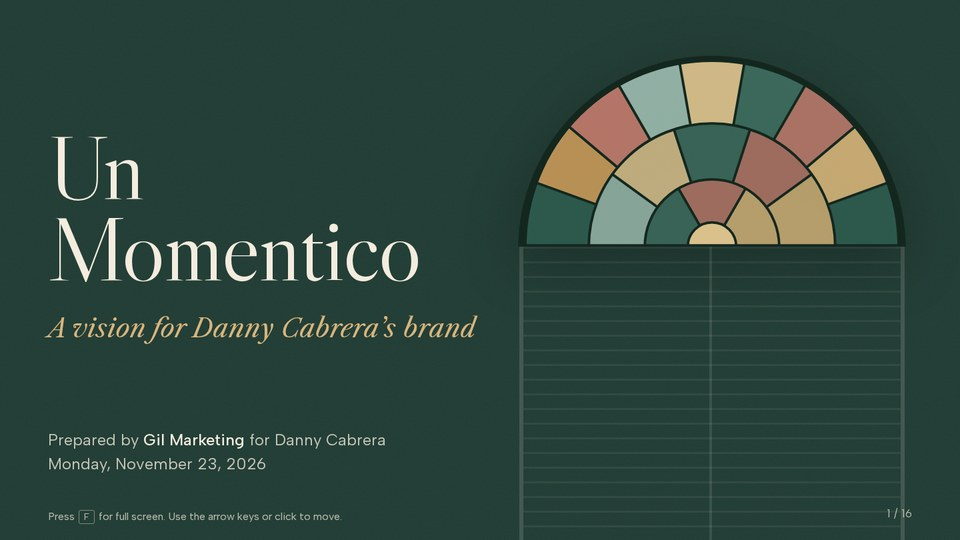
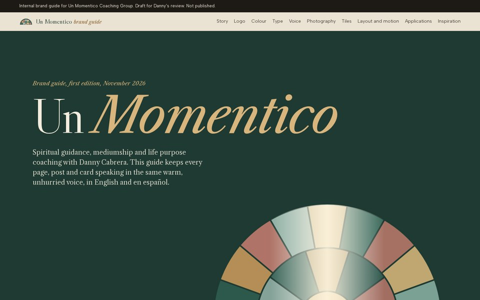
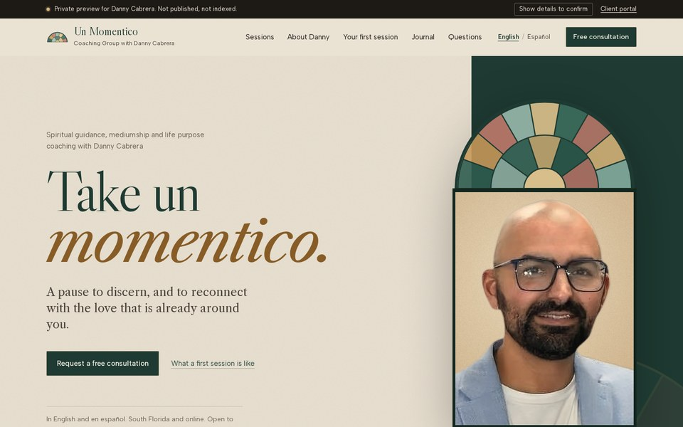
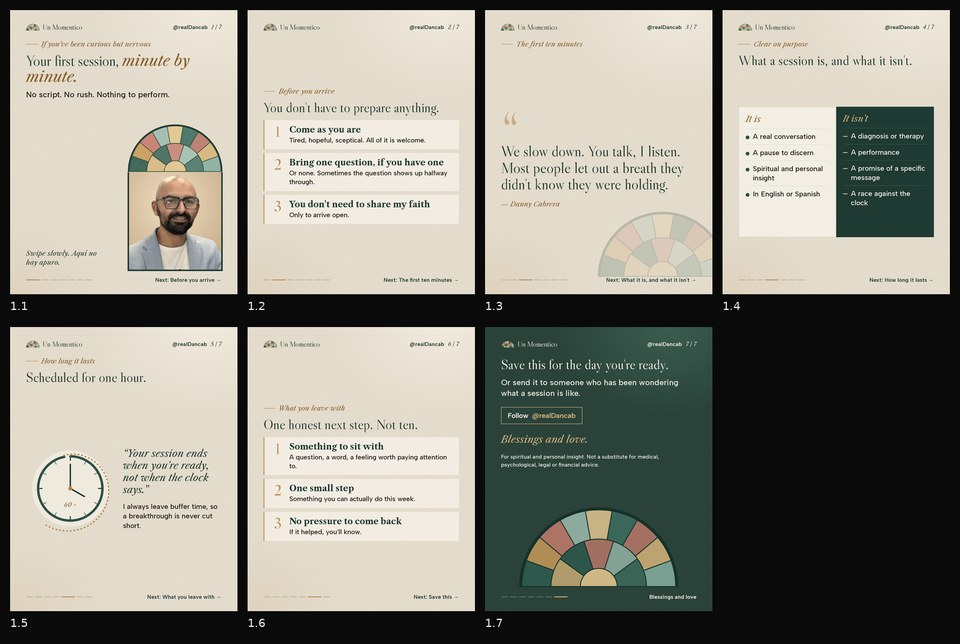
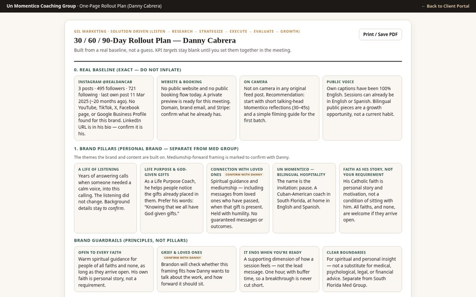
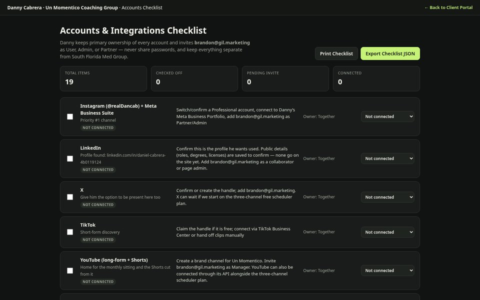

Take un momentico, Danny.
Before anything ever goes public, you should be able to see your entire brand, website, content, and plan in one calm place—and shape every word until it feels unmistakably like you.
Welcome to your Un Momentico dashboard. We will walk through these seven steps together today, and afterward you can take your time revisiting any piece on your own.
Click Open on any step to explore the full piece, tap Love it, Change something, or Question as you go, and use Export my feedback whenever you are ready to send your notes back to Brandon.
The bigger picture for Un Momentico
People who already trust you need a place to send a friend, and people who need your gift cannot find you yet. This deck shows how every piece connects without turning your work into a loud production.

Un Momentico Vision Deck16 slidesWalks through the starting baseline, why “un momentico” and the Cuban medio punto window fit your calling, the bilingual website, how one monthly sitting feeds the rest of your content, and what we confirm together first.
Use arrow keys or click the sides of each slide to move through, or press F for full screen.
Your mark, colours, typography, and voice
Inspired by the Cuban medio punto stained-glass fan above interior doors, this system lets every page, post, and video feel warm, grounded, and unmistakably yours—with zero religious gatekeeping.

Un Momentico Brand GuideMark, colour & voiceInside the guide: the medio punto mark, the forest green, limewash, antique gold, and muted guava palette, Libre Caslon and Albert Sans typography, how the glass-tile motif works for each session type, and clear English & Spanish voice guardrails.
The Inspiration page shows the Cuban architectural and visual references behind the design.
A calm home in English and en español
Your website is the quiet front door where someone searching for spiritual guidance, mediumship, or life-purpose coaching can read in their own language, feel safe, and reach out for a conversation.

Bilingual Preview WebsiteEN / ES switchEvery page switches smoothly between English and Spanish, holds open the door to all faiths and none, introduces mediumship gently without promises, and features your signature standard: Your session ends when you’re ready, not when the clock says.
Carousels, videos, articles, and Take Un Momentico
Helpful, unhurried teaching lets someone experience how you listen before they ever sit down with you—and one monthly recording can gently nourish the whole week.

Content Review SheetApprove or flag editsEverything here is an unsent draft waiting for your eyes:
Included in the review sheet: five designed swipeable carousels with motion video previews, five short-form video scripts with captions, a warm monthly newsletter draft, two helpful journal articles, the sample episode package for your monthly YouTube show Take Un Momentico (for Spanish: Tómate Un Momentico — working title and format to confirm with you), and three unsent outreach examples for podcasts, employee wellness, and community partners.
First 90 days, pillars, outreach, and steady growth
You do not need to be everywhere on day one. This sequence launches your home base first, learns from real conversations, and grows only where people actually respond.

30 / 60 / 90 Rollout PlanPrintable one-pagerCovers your brand pillars and guardrails, how the monthly Take Un Momentico sitting anchors your weekly clips and carousels, a 30/60/90 schedule starting from your real baseline, outreach and community partnerships, and a calm Growth & Authority track from month 2 onward.
Accounts checklist — no passwords shared
You stay the primary owner of every account from day one. Simply adding brandon@gil.marketing as an admin or manager lets us connect and organize everything safely behind the scenes.

Accounts & Access ChecklistInvite as admin onlyA clear step-by-step list for Instagram, LinkedIn, YouTube (long-form plus Shorts), TikTok, website analytics, booking & payments under Un Momentico LLC (we recommend Cal.com with Stripe, or Calendly if you prefer), your newsletter (Beehiiv), and a separate outreach inbox (Zoho Mail).
Everything stays dedicated solely to your personal brand under Un Momentico LLC, and you never share a password.
Nine details to make everything 100% yours
We deliberately kept your real story, photos, testimonials, and session hours marked to confirm—because nothing public should ever guess at your life or your boundaries.